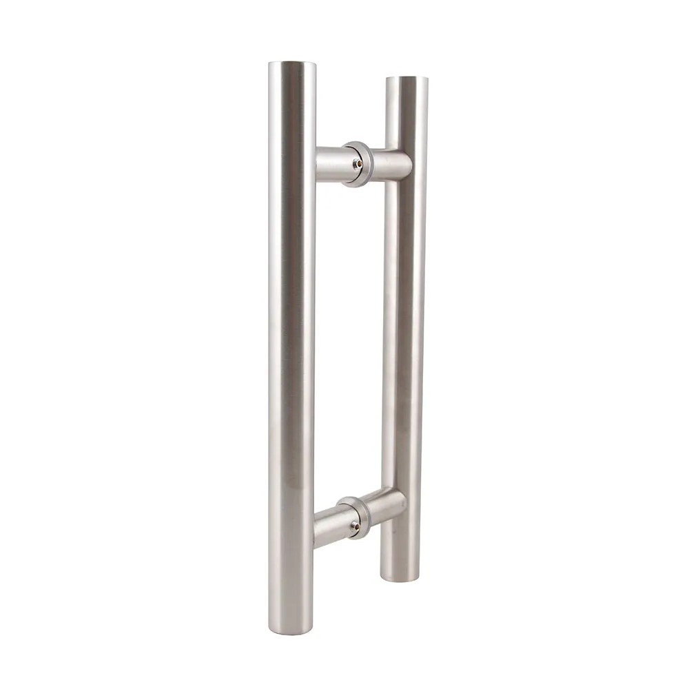
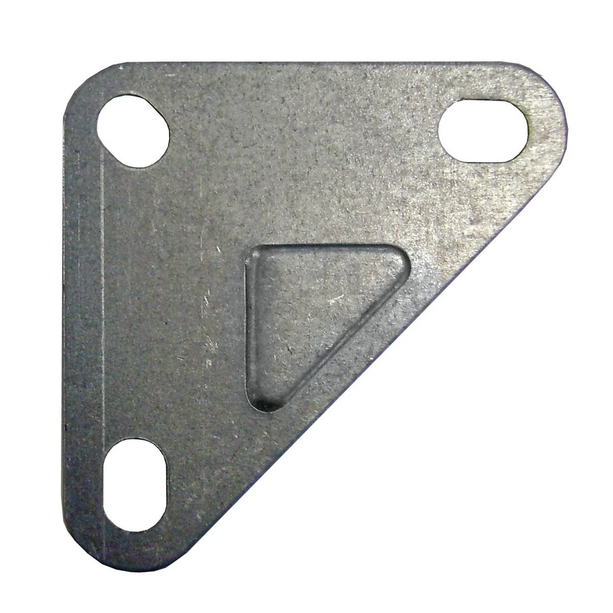
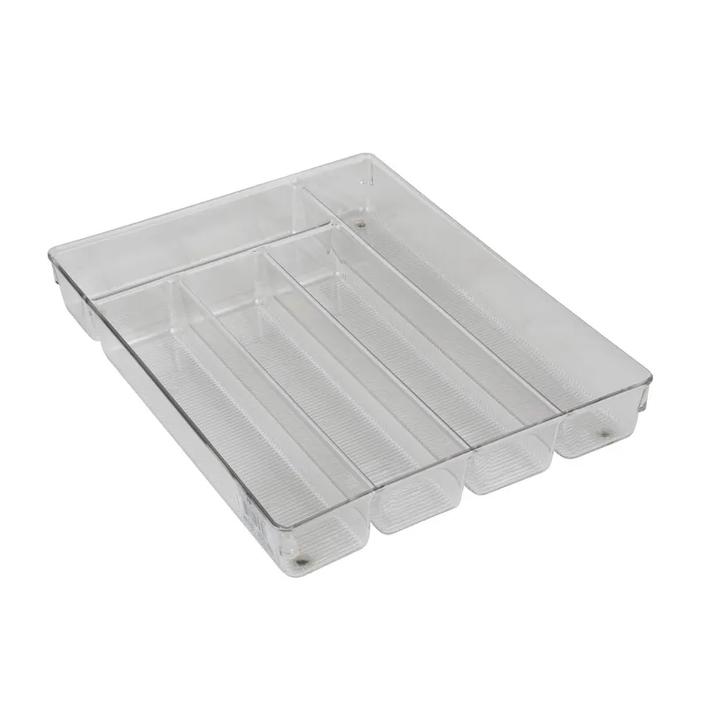

Bisagra de cierre suave
Cierre amortiguado para puertas.
Categorías Principales
Cierre amortiguado para puertas.

Estándar para cocina y closets.

Extensión total para cajones.

Cierre silencioso.

Para puertas y cajones.

Refuerza uniones.

Divisor para cajones.

Amortigua el golpe de puertas.